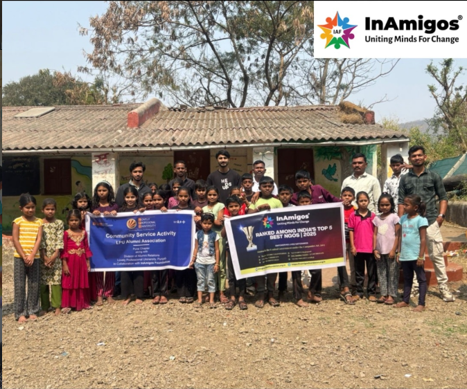
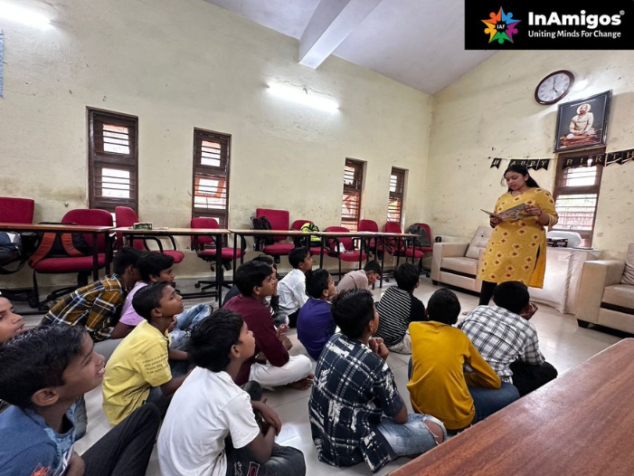
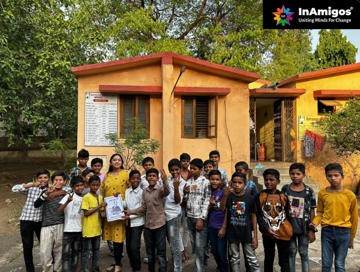
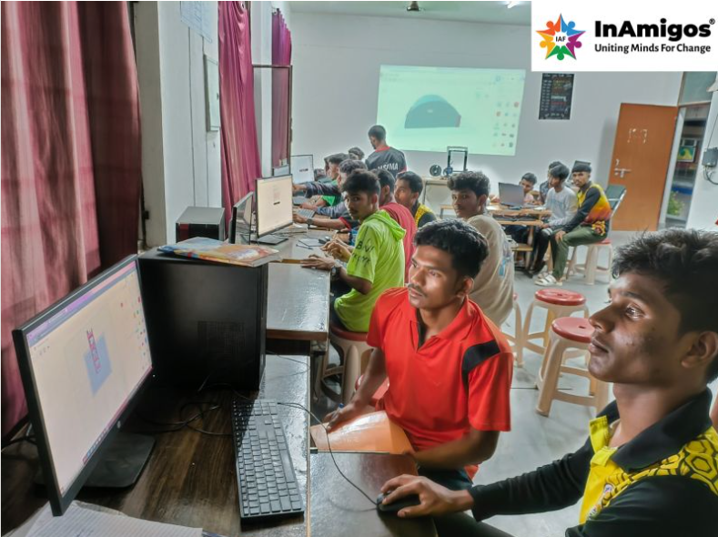

We’re a group of people who believe that change doesn’t need to start big — it just needs to start somewhere. At InAmigos, we focus on taking consistent steps that make a real difference in people’s lives.
InAmigos is a community-driven initiative led by young individuals who want to contribute beyond just ideas. Instead of waiting for change, we try to be part of it — whether that’s through teaching, organizing local drives, or simply showing up where help is needed.
What makes us different is not the scale of what we do, but the consistency. We believe even small, well-executed efforts can create meaningful impact over time.

We work with students who don’t always have access to the right resources. Through mentoring and guidance, we try to make learning more accessible.

We respond to real needs through donation drives and local support programs rather than one-size-fits-all campaigns.

We also focus on helping students access digital learning tools, making it easier for them to adapt to modern education methods and improve their skills.
The intention behind every activity is simple — to make sure the effort reaches people in a meaningful way. Even small actions, when done consistently, can create a visible difference over time.
While the scale may not always be large, the focus remains on being present, reliable, and genuinely helpful where it matters most.
Volunteers
Lives Impacted
Campaigns
The goal isn’t just to run campaigns — it’s to make sure the effort actually reaches people who need it. Over time, these small actions add up.
Every image reflects a moment where someone chose to contribute.
You don’t need special skills. If you’re willing to show up and help, there’s always a place for you here.